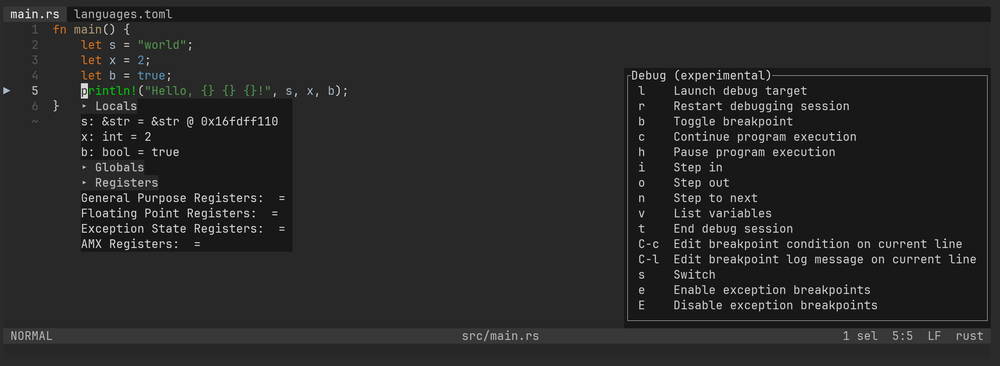
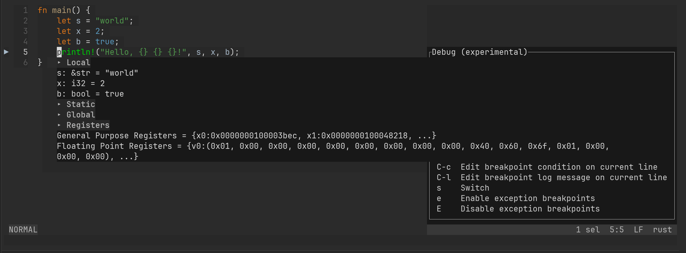

Quan Tong
Quan Tong
How to debug Rust in Helix?
2023-08-10
Helix supports debugging Rust by default using lldb-vscode. However, there is an issue where string variables are displayed as memory addresses instead of their actual values:

Noticing that CodeLLDB natively supports visualization of most common Rust data types, I would like to give it a try.
Here’s the step-by-step process:
Download the CodeLLDB extension:
$ cd ~/Downloads/
$ wget https://github.com/vadimcn/codelldb/releases/download/v1.9.2/codelldb-aarch64-darwin.vsix
Setup the extension:
$ mkdir -p ~/.local
$ set fish_user_paths /Users/quantong/.local/extension/adapter $fish_user_paths
$ codelldb
If you encountered this error:
$ codelldb
Error: "\"dlopen(/Users/quantong/.local/extension/lldb/lib/liblldb.dylib, 0x0009):
tried: \\'/Users/quantong/.local/extension/lldb/lib/liblldb.dylib\\' (code signature in <71492E0A-B915-3776-BCB8-266C07A85228>
\\'/Users/quantong/.local/extension/lldb/lib/liblldb.dylib\\' not valid for use in process: library load disallowed by system policy)\""
Remove attributes using xattr:
$ xattr -cr ~/.local/extension/
Retry launching:
$ codelldb --port 13000
Switch to use codelldb by adding the following to ~/.config/helix/languages.toml:
[[language]]
name = "rust"
[language.debugger]
command = "codelldb"
name = "codelldb"
port-arg = "--port {}"
transport = "tcp"
[[language.debugger.templates]]
name = "binary"
request = "launch"
[[language.debugger.templates.completion]]
completion = "filename"
name = "binary"
[language.debugger.templates.args]
program = "{0}"
runInTerminal = false
$ hx --health rust
Configured language server: rust-analyzer
Binary for language server: /opt/homebrew/bin/rust-analyzer
Configured debug adapter: codelldb
Binary for debug adapter: /Users/quantong/.local/extension/adapter/codelldb
Highlight queries: ✓
Textobject queries: ✓
Indent queries: ✓
Create a new cargo package:
$ cargo new hello_cargo
Open src/main.rs and add the following code:
fn main() {
let s = "world";
let x = 2;
let b = true;
println!("Hello, {} {} {}!", s, x, b);
}
Build your code by running:
$ cargo build
The executable will be places in the target/debug directory.
In the Helix editor, use the following steps for debugging:
- Press
<Space>and thengto go to Debug. - Press
bto toggle breakpoint. - Press
lto launch debug target. - Enther the binary path
target/debug/hello_cargoand press Enter.
After a few seconds, you’ll see the actual value of string variables:

Categories: Development Environment
Tags: helix dap lldb-vscode codelldb